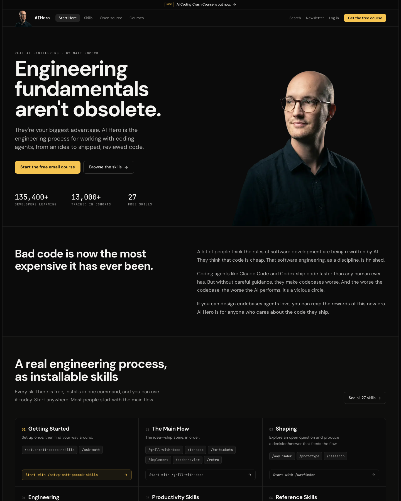

Який макет першого екрана найближчий до того, як має виглядати сайт?
Відповідайте в чаті номером варіанта і коментарем, наприклад: «2, але зі шрифтом із 3».
1
Редакційний: великий заголовок із засічками
Одна колонка, текст веде, жодного зображення.
Критик
- Заголовок тримає екран, але під ним порожньо: на 1440 нижня третина нічим не зайнята.
- Посилання-дія слабше за кнопку референса; його легко пропустити.

aihero.dev: беремо щільність першого екрана і одну чітку дію.
Джерело: https://www.aihero.dev/
2
Продуктовий: дві колонки з портретом
Заголовок і кнопка ліворуч, місце під портрет праворуч.
Критик
- Сітка рівна, навігація і герой в одному контейнері.
- Заглушка портрета займає 40% екрана; без справжнього фото оцінити рівень неможливо.
aihero.dev: беремо контрастну кнопку і присутність автора на першому екрані.
Джерело: https://www.aihero.dev/
3
Термінальний: центрований, моноширинний
Усе по центру, форма підписки замість кнопки.
Критик
Зауважень немає.
aihero.dev: беремо підписку як головну дію.
Джерело: https://www.aihero.dev/